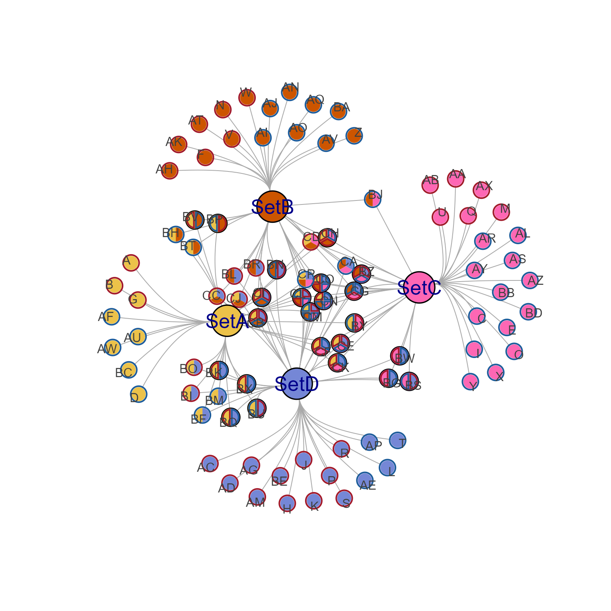
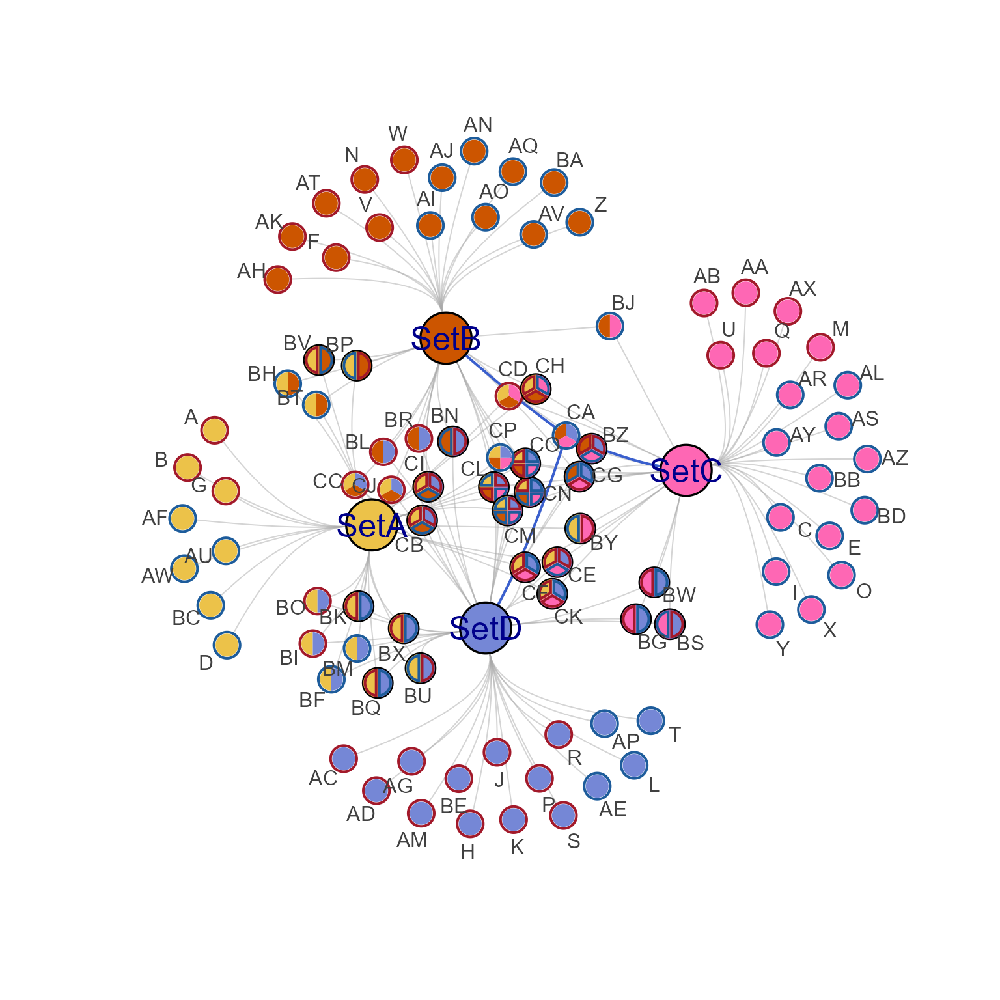
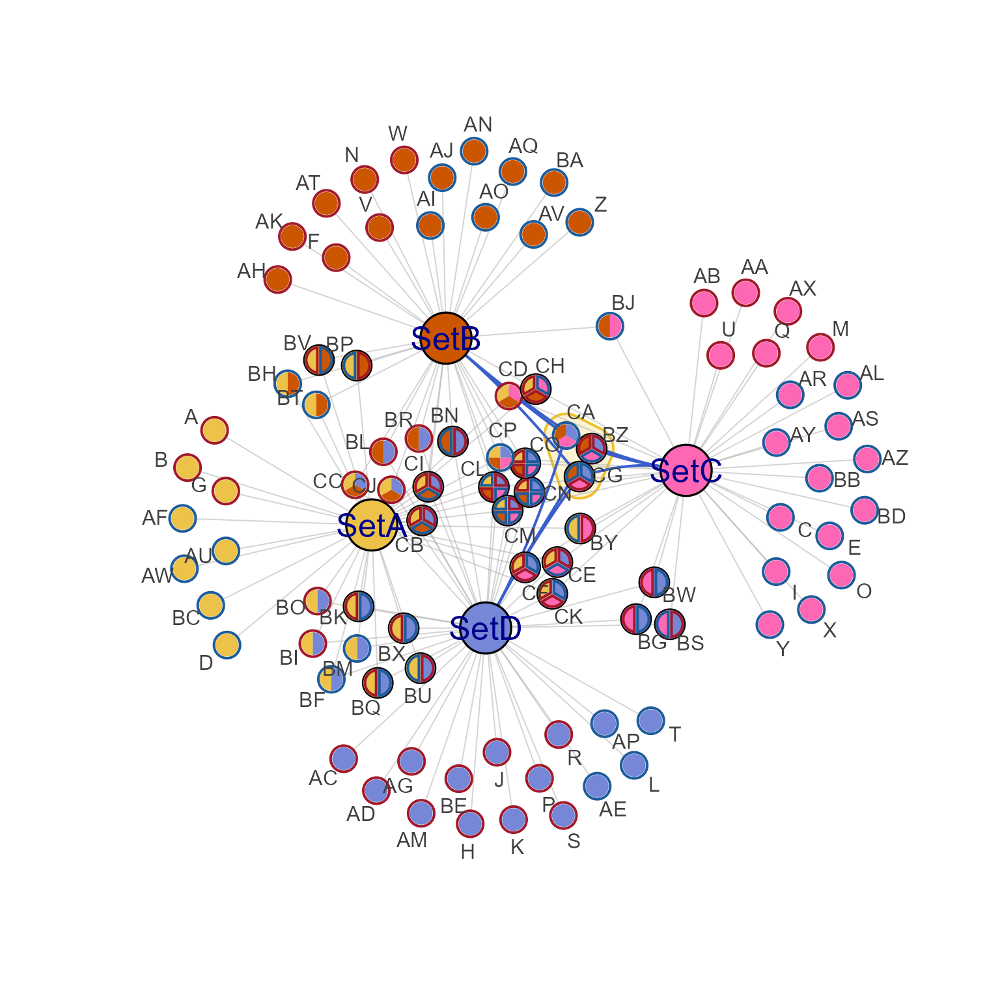

Highlight edges connected to a node or nodes
Source:R/jamenrich-highlights.R
highlight_edges_by_node.RdHighlight edges connected to a node or nodes
Usage
highlight_edges_by_node(
g,
node = NULL,
highlight_color = "royalblue3",
highlight_width = NULL,
highlight_cex = 2,
nonhighlight_alpha = NULL,
...
)Arguments
- g
igraphobject- node
characternode name, orintegernode index.- highlight_color
charactercolor used for highlighting, default 'royalblue'.- highlight_width
numericdefault NULL, set a fixed edge width.- highlight_cex
numericdefault 2, multiplies the edge width by this expansion factor.- nonhighlight_alpha
numericdefault NULL, applies an optional alpha transparency to non-highlighted edges. Values must be between 0 (transparent) and 1 (opaque), where a value 0.5 is recommended when used.- ...
additional arguments are ignored.
Details
This function highlights edges connected to one of more nodes by applying a color, and adjusting the edge width.
Note that when edge attributes 'width' and 'color' are not yet
defined in the igraph object, they will be defined and stored
into the object by using default_igraph_values().
For example: default_igraph_values()$edge$width and
default_igraph_values()$edge$color.
See also
Other jam igraph functions:
communities2nodegroups(),
drawEllipse(),
edge_bundle_bipartite(),
edge_bundle_nodegroups(),
fixSetLabels(),
flip_edges(),
get_bipartite_nodeset(),
igraph2pieGraph(),
label_communities(),
mem2cnet(),
mem2emap(),
nodegroups2communities(),
rectifyPiegraph(),
removeIgraphBlanks(),
subsetCnetIgraph(),
subset_igraph_components(),
sync_igraph_communities()
Examples
cnet1 <- make_cnet_test(seed=1);
# highlight edges by node
cnet1h <- highlight_edges_by_node(cnet1, "CA", nonhighlight_alpha=0.5)
# plot the original
jam_igraph(cnet1)

# plot the highlighted variant
jam_igraph(cnet1h, label_dist_factor=3)

# highlight edges using nodeset
nodesets <- get_cnet_nodeset(cnet1)
cnet1hns <- highlight_edges_by_node(cnet1,
nodesets[[grep("CA", nodesets)]],
nonhighlight_alpha=0.5)
jam_igraph(cnet1hns, node_factor=2, label_factor=2, label_dist_factor=3,
mark.groups=unname(nodesets[grep("CA", nodesets)]))
